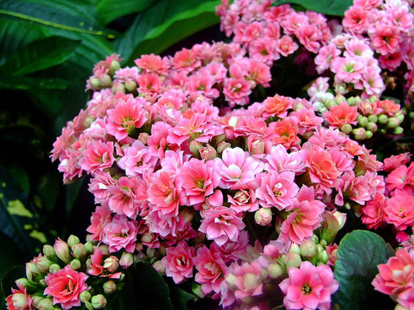
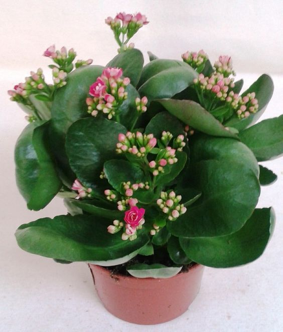
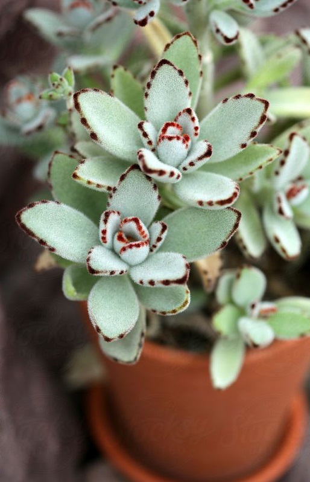
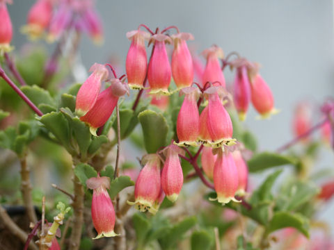
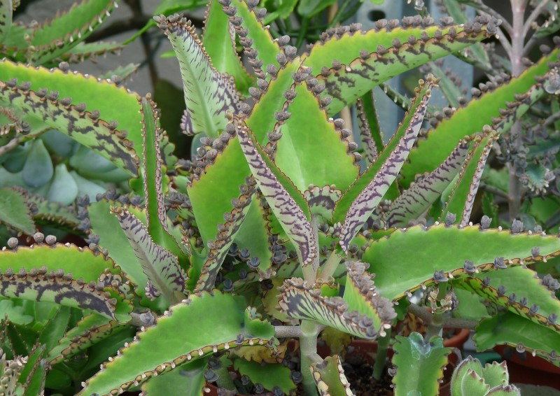
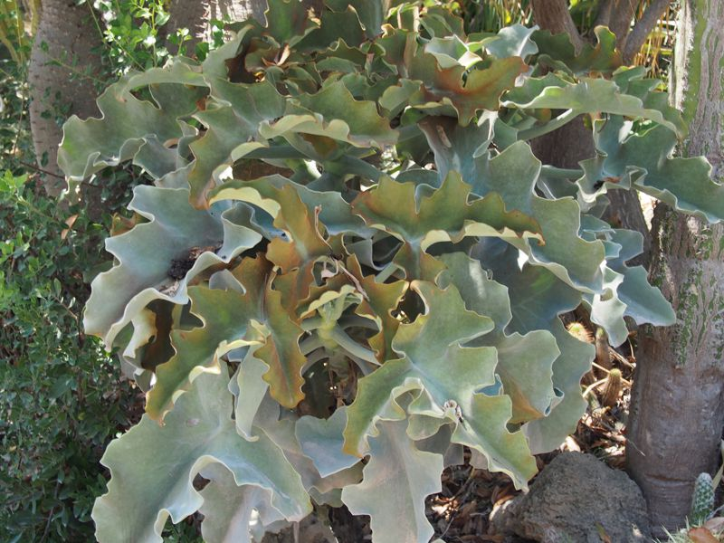
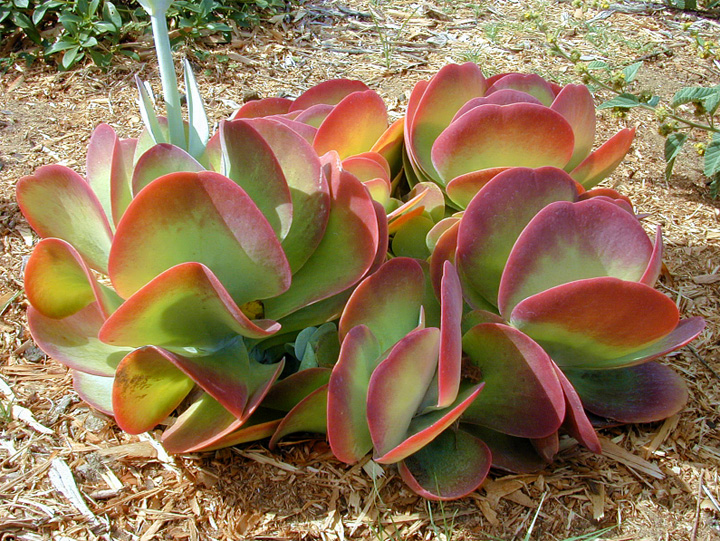

Уход за цветами каланхоэ в домашних условиях с фото/
В настоящее время цветок каланхоэ многие любители флоры выращивают в домашних условиях. Такая популярность растения напрямую связана с его лекарственными свойствами, которые помогают человеку справиться со многими недугами.
При надлежащем уходе каланхоэ отлично растет и развивается на подоконнике, кроме того, он неприхотлив к составу почвы. При соблюдении определенных условий многие представители этого семейства выбрасывают цветки разных оттенков, но у большинства видов период цветения не очень продолжительный. Давайте посмотрим, как вырастить каланхоэ в домашних условиях и как за ним ухаживать.
Виды каланхоэ с фото
Цветоводы могут выращивать у себя на подоконниках различные виды цветка каланхоэ. Большой популярностью у многих людей пользуется каланхоэ Блоссфельда. Этот сорт отличается своими небольшими размерами и высотой не более 45 см, а также кустообразной формой. Он имеет темно-зеленые листья с гладкой поверхностью и волнистым краем. При правильным уходе за каланхоэ Блоссфельда в период цветения на кусте появляются красивые цветки разнообразных оттенков.
 Каланхоэ БлоссфельдаИз этого сорта был позднее выведен новый цветок, который унаследовал от своего прародителя многие характеристики, в том числе и размер. Уход за каланхоэ Каландива в домашних условиях несложен, а сорт славится своими великолепными бархатистыми цветками. Период цветения у этого вида каланхоэ продолжается с середины весны и длится до самой осени. По завершению цветения рекомендуется обрезать вытянувшиеся стебли и сократить полив. Для того, чтобы растение могло отдохнуть, следует перенести его в полутень.
 Неприхотливый каланхоэ КаландиваСамый необычный окрас листьев у мраморного каланхоэ. Его светло-зеленые листики покрыты необыкновенно красивыми темно-коричневыми пятнами. Цветет это каланхоэ длинными белоснежными цветками. Как видно на фото, каланхоэ войлочное обладает уникальной отличительной чертой – коричневой полосой, которая проходит по краю серебристо-зеленых листьев. Свое название растение получило за необычную поверхность продолговатых листочков, они как бы покрыты слоем мягкого пуха.
 Каланхое войлочноеНельзя оставить без внимания и популярный декоративно-цветущий вид под названием каланхоэ Мангина. Этот сорт отличается небольшими листочками и поникшим стеблем. Во время цветения растение выпускает цветки в форме колокольчиков, размером до 2-х сантиметров.
 Каланхоэ Мангина выпускает цветки в форме колокольчиковОчень большой популярностью пользуются каланхоэ перистое и каланхое Дегремона. Молодые растения этих сортов могут образовываться прямо на листьях взрослого цветка. Отличительными чертами этих видов являются прямой стебель и удлиненные листья. Детки могут появляться из выводковых почек, образующихся на листья между зубцами. Они, еще будучи на взрослом растении, выпускают корни, которые позволяют им быстро укорениться при попадании в грунт.
 Каланхое ДегремонаНередко у цветоводов можно встретить и каланхоэ бехарское. Это растение больше похоже на полукустарник с прямостоячими стеблями. На его треугольных с закругленными краями листьях можно заметить серо-голубой налет. Период цветения приходится на лето, в это время на растении появляются небольшие желтые цветочки.
 Каланхое бехарское больше похоже на полукустарникОдним из самых необычных представителей этого семейства является каланхоэ метельчатоцветковое. Его легко узнать по закругленным двухцветным листьям. Преобладающая часть листка имеет светло зеленую окраску, а по краям она приобретает красноватый оттенок. Цветет это каланхоэ небольшими цветочками желтого цвета.
 Каланхоэ метельчатоцветковое с закругленными двухцветным листьям